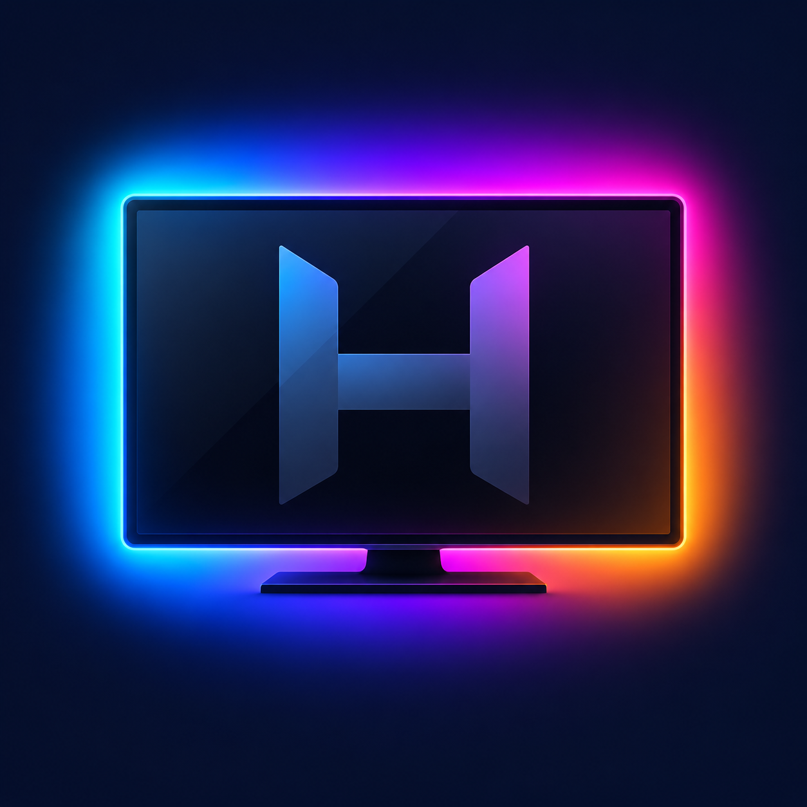

Checking service …
Homebrew Channel grants root to the HyperDRM service. The service then restarts with its updated permissions.
Autostart retries until the receiver is available. Auto PicCap uses PicCap for unprotected playback and HyperDRM for protected playback. Keep PicCap's own autostart off.
Priority 149 · 10 updates per second
Adjust brightness, saturation and normal smoothing in Hyperion or HyperHDR.
JSON addresses one HyperHDR LED hardware instance per connection. FlatBuffer sends one plane that HyperHDR fans out to every running instance, so extra instances light up too. It needs the receiver's FlatBuffer server.
Connection test: Not tested
The JSON TCP port is usually 19444. Leave the token blank to keep the saved token. Saving updates the current session. Histogram capture defaults to 50 ms; choose 25–1000 ms in steps of 25. Lower values reduce latency and increase TV load. PicCap uses its own capture rate.
Auto PicCap uses the same IP and its FlatBuffer port, usually 19400. Enable the receiver's FlatBuffer server. Remote IPv6 uses HyperDRM.
Detecting TV model...
1. MeasurePlay the built-in edge test. Keep the picture full-screen without bars.
2. SaveReview the result and save the measured profile.
3. CheckValidate all four colored screen corners against the LEDs.
Measurement takes about 70 seconds. Your saved profile is preserved until you select Save profile.
Auto uses your measured model profile or the built-in LG G4 profile. Other uncalibrated TVs use average colors.